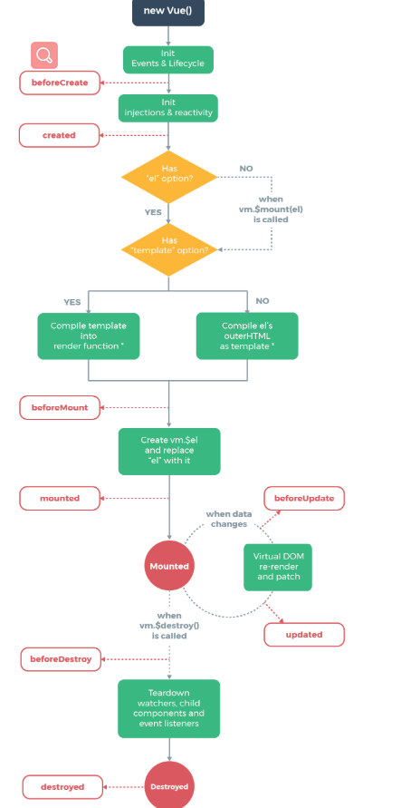

1.Vue的生命周期
每个 Vue 实例在被创建时都要经过一系列的初始化过程——例如，需要设置数据监听、编译模板、将实例挂载到 DOM 并在数据变化时更新 DOM 等。同时在这个过程中也会运行一些叫做生命周期钩子的函数，这给了用户在不同阶段添加自己的代码的机会。
new Vue({ data: { b:2 }, created: function () { // `this` 指向 vm 实例 console.log('b: ' + this.b) } }) // => "b : 2"
也有一些其它的钩子，在实例生命周期的不同阶段被调用，如 mounted、updated 和 destroyed。生命周期钩子的 this 上下文指向调用它的 Vue 实例。
mounted
updated
destroyed
this
2.Vue生命周期图示
